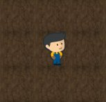
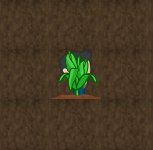

Toni es un amigo youtuber que se gana la vida cultivando plantas de distintas especies. Para ello tiene que sembrar, regar y cosechar sus cultivos. Después de la cosecha, Toni vende lo que cultivó, obteniendo ganancias en la forma de monedas de oro. Toni es muy ahorrativo y todo el oro que obtiene por sus cosechas lo acumula.
Nuestro objetivo es construir un juego en el que podamos controlar a Toni, utilizando el teclado para moverlo alrededor del tablero. Las plantas y el comportamiento de Toni son los que ya agregamos en la primera etapa, aquí agregaremos algunas cosas para convertirlo en un juego.
Antes de empezar, copien las definiciones de Toni, las plantas y la Pachamama en los archivos que dejamos ya preparados para ello.
Configurar las siguientes teclas para controlar a Toni:
| Tecla | Acción esperada |
|---|---|
| Flechas | Desplazan a Toni en la dirección correspondiente. |
| M | Siembra una planta de maíz en la posición actual. |
| T | Siembra una planta de trigo en la posición actual. |
| O | Siembra una planta de tomaco en la posición actual. |
Por ahora, vamos a evitar sembrar dos plantas en la misma celda, porque eso va a traer problemas a futuro. Más adelante vamos a agregar una validación para que Toni tire error. Es importante que Toni recuerde las plantas que sembró, lo vamos a necesitar para regar.
Al ser sembradas, las plantas aparecen en su estado inicial, según ya vimos en la etapa 1.
Vamos a contemplar dos formas de regar:
| Tecla | Acción esperada |
|---|---|
| A | Riega todas las plantas que hay en el tablero. |
| R | Riega la planta sobre la cual está parado Toni. |
El regar todas ya lo teníamos programado de la etapa anterior, no debería ser problemático. Regar una sola es más difícil: primero hay que averiguar qué plantas hay en la posición actual de Toni y luego regarlas.
Para esto, Wollok Game tiene un método llamado colliders(visual), que devuelve todos los elementos que están chocando con el objeto que va por parámetro. Veamos dos ejemplos:
| Situación | Resultado de evaluar game.colliders(toni) |
|---|---|
|  | [] |
|  | [un/a Maiz] |
Como se ve, lo que devuelve es una lista y lo que necesitamos es una sola planta, para poder regarla. Les queda a ustedes pensar cómo resolver eso.
El efecto de las plantas al ser regadas es el mismo de antes. Obviamente, tiene que actualizarse la imagen cada vez que se riega, en la carpeta assets ya tienen todo lo necesario.
Nuevamente, vamos a contemplar dos formas de cosechar:
| Tecla | Acción esperada |
|---|---|
| X | Cosecha todas las plantas que están listas para cosechar. |
| C | Cosecha la planta sobre la cual está parado Toni. |
En el caso de la cosecha por planta, por ahora vamos a ignorar si está lista o no.
Programar las siguientes teclas:
| Tecla | Acción esperada |
|---|---|
| V | Vende toda la cosecha actual. |
| Espacio | Informa el estado de Toni. |
Para el informe del estado de Toni vamos a armar un String y mostrarlo con game.say. El mensajito debería decir cuántas monedas tiene actualmente y cuántas plantas le quedan para vender, por ejemplo: "Tengo 80 monedas y me quedan 3 plantas para vender".
Recordá que se pueden concatenar Strings utilizando el +:
>>> "Me quedan " + 3 + " plantas"
"Me quedan 3 plantas"
Vamos a simplificar aún más el manejo de la Pachamama, agregando solamente teclas para las acciones de fumigar y llover:
| Tecla | Acción esperada |
|---|---|
| F | Provoca el cambio correspondiente a fumigar en la Pachamama. |
| L | Provoca el cambio correspondiente a llover en la Pachamama. |
Se pide además que cambie la imagen de la Pachamama cuando no está agradecida. La imagen para hacerlo no está incluida, tienen que armarla ustedes.
Debería cambiar también la imagen de los tomacos, para reflejar si están podridos o no. Estas imágenes sí se incluyen.
Agregar las siguientes validaciones:
Hasta acá lo obligatorio para aprobar el TP. Lo que sigue debajo son bonus que pueden hacer para sumar nota (y, ponele, divertirse un rato). Son independientes uno del otro y pueden hacerse en cualquier orden.
Incluir dos o tres mercados (imagen mercado.png), eligiendo dónde poner cada uno en el tablero. Cada mercado tiene una cantidad de monedas, y una lista con la mercadería que posee.
Hacer que Toni solamente pueda vender si está parado en un mercado, y además el mercado tiene suficiente cantidad de monedas para pagar lo que Toni tiene para vender. En tal caso, la mercadería se agrega al mercado, y se le descuentan las monedas que le da a Toni en pago. Arrojar un error si se intenta vender y Toni no está parado sobre un mercado.
Hacer los cambios necesarios para que Toni aparezca "del otro lado" cuando al caminar se pasa de los límites del tablero. Por ejemplo, si está en el borde derecho y apretamos la flecha derecha, debería aparecer en el borde izquierdo de esa misma fila.
Programar una tecla para poder sembrar toda una fila (horizontal) y otra para poder sembrar toda una columna (vertical) de maíz, ambas en función de dónde Toni está parado. Puede servir como base el ejemplo que viene de la fila de maíz.
Ultra bonus: sembrar solamente en las celdas de la fila/columna que no tengan plantas ni mercados.
Similar al anterior, pero ahora se pide tener una tecla para cosechar toda una fila y otra para cosechar toda una columna.
Tener en cuenta que game.colliders solo funciona si Toni está en la misma celda que las plantas, lo cual deja dos opciones:
game.getObjectsIn(position), que devuelve todos los objetos que están en la posición que va por parámetro.Hacer que Toni pueda ofrendarle algo a la Pachamama para que lo ayude con su producción. La ofrenda se hace simplemente caminando hasta donde está la Pacha y "chocando" con ella (hay que usar game.whenCollideDo para ver si esto es así).
Cuando Toni hace una ofrenda, pasa lo siguiente:
Ultra bonus: que después de la ofrenda, la Pacha cambie de lugar. Podría, por ejemplo, ubicarse en la esquina opuesta a la que está. O desplazarse un número fijo de unidades a la derecha. Elijan ustedes.